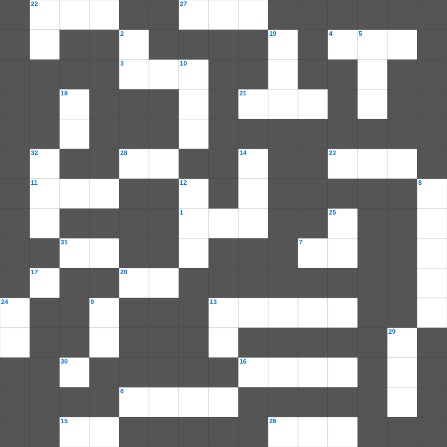

성경 상식: 구약의 여인들
성경 상식를 주제로 한 성경 상식 무료 성경퀴즈입니다. 35개의 단어를 맞춰보세요! 가로세로 낱말 퍼즐 형식으로 성경 상식의 핵심 내용을 재미있게 복습할 수 있습니다.

📝 가로 힌트
1. 이스라엘의 유일한 여성 사사
3. 평안히 눕고 이것하기도 하리니
4. 이스라엘이 외칠 때 무너진 성
6. 할 수 있거든이 무슨 말이냐 믿는 자에게는 이것이 없느니라
7. 제물을 통째로 태워 드리는 제사
11. 예수님이 광야에서 금식하신 일수
11. 노아의 방주에 비가 내린 일수
13. 성경의 맨 마지막 책
15. 나의 이것을 너희에게 주노라
16. 눈물의 선지자로 불리는 사람
20. 야곱의 아들 수
21. 모세의 누나
22. 어린아이가 가져온 보리떡의 개수
23. 엘리야가 바알 선지자와 대결한 산
26. 베드로와 안드레의 고향
27. 이스라엘이 광야에서 보낸 년수
28. 야곱이 사다리 환상을 본 곳
31. 시편 다음 책
📝 세로 힌트
2. 여호와는 나의 이것이시니 내게 부족함이 없으리로다
5. 이사악의 아내
8. 남은 조각을 거둔 바구니의 수
9. 네 이것을 공경하라
10. 이것 하지 말라(남의 물건을 가져감)
12. 안드레의 형제
13. 물고기 배 속에서 회개한 선지자
14. 삼손의 힘의 비밀을 알아낸 여인
17. 겨자씨 한 알 만한 믿음이 있으면 이 이것을 옮기리라
18. 아무것도 이것하지 말고 오직 기도와 간구로
19. 함께 가져온 물고기의 마리 수
22. 바울의 고향
24. 여호수아가 기도할 때 멈춘 것
25. 곡물로 드리는 제사
29. 바울이 2년 동안 가르쳤던 서원
30. 모세가 반석을 치자 나온 것
32. 메시아의 탄생을 예언한 평화의 선지자
🏷️ 키워드
성경 상식 무료 성경퀴즈, 성경 상식, 십자가로세로, 성경퀴즈, 말씀퀴즈, 가로세로퍼즐